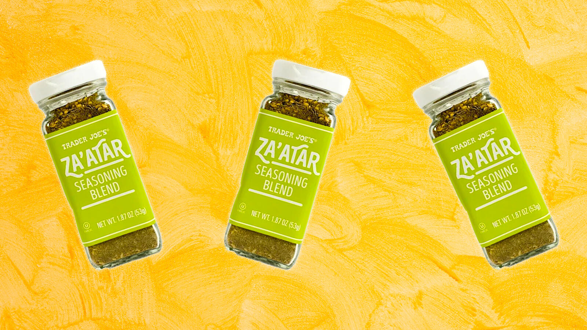

New Product Alert!
Trader Joe's Za'atar Seasoning Blend
You might be wondering, what exactly is Za'atar? Well, I consulted Sarah Jampel from BonAppetit for the answer:
Za'atar is so multifaceted and dynamic because it's a blend of so many different flavors, textures, and fragrances. Even though it varies greatly depending on where you are in the Middle East (specific recipes are sometimes closely-guarded secrets!), za'atar is generally a combination of dried oregano, thyme, and/or marjoram (woodsy and floral), with sumac (tangy and acidic) and toasted sesame seeds (nutty and rich).
She wrote a fantastic article about Za'atar, even giving you a recipe on how to make it yourself. Check it out here!

by Zakiyyah Mandisa | 1 day ago
Crew Member at Trader Joe's. Recent college grad figuring out what I want to do,
in the meantime I'll be bagging your groceries and telling you which products are the best!